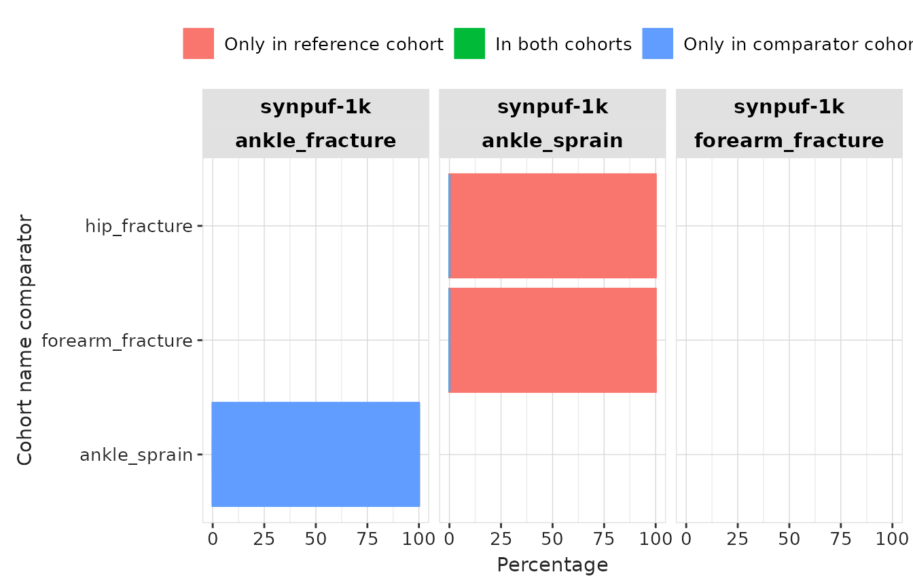
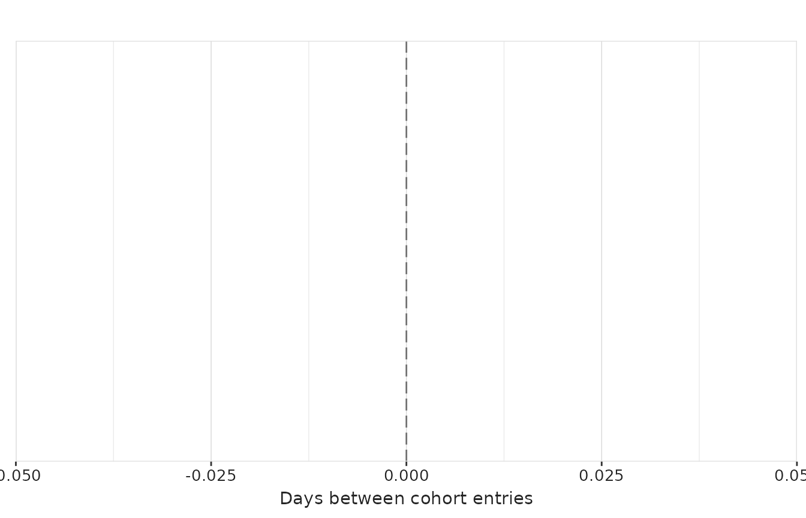
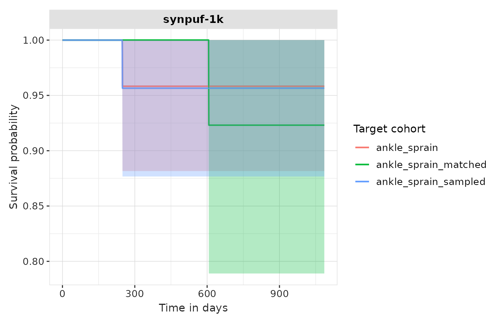

Introduction
In this example we’re going to summarise cohort diagnostics results for cohorts of individuals with an ankle sprain, ankle fracture, forearm fracture, or a hip fracture using the Eunomia synthetic data.
Again, we’ll begin by creating our study cohorts.
library(CDMConnector)
library(CohortConstructor)
library(CodelistGenerator)
library(CohortCharacteristics)
library(CohortSurvival)
library(PhenotypeR)
library(dplyr)
library(ggplot2)
cdm <- omock::mockCdmFromDataset(datasetName = "synpuf-1k_5.3", source = "duckdb")
cdm$injuries <- conceptCohort(cdm = cdm,
conceptSet = list(
"ankle_sprain" = 81151,
"ankle_fracture" = 4059173,
"forearm_fracture" = 4278672,
"hip_fracture" = 4230399
),
name = "injuries")Cohort diagnostics
We can run cohort diagnostics analyses for each of our overall cohorts like so:
cohort_diag <- cohortDiagnostics(cdm$injuries,
cohortSample = NULL,
matchedSample = NULL,
survival = TRUE)Cohort diagnostics builds on CohortCharacteristics and CohortSurvival R packages to perform the following analyses on our cohorts:
- Cohort count: Summarises the number of records and persons in each one of the cohorts using summariseCohortCount().
- Cohort attrition: Summarises the attrition associated with the cohorts using summariseCohortAttrition().
- Cohort characteristics: Summarises cohort baseline characteristics using summariseCharacteristics(). Results are stratified by sex and by age group (0 to 17, 18 to 64, 65 to 150). Age groups cannot be modified.
- Cohort large scale characteristics: Summarises cohort large scale characteristics using summariseLargeScaleCharacteristics(). Results are stratified by sex and by age group (0 to 17, 18 to 64, 65 to 150). Time windows (relative to cohort entry) included are: -Inf to -1, -Inf to -366, -365 to -31, -30 to -1, 0, 1 to 30, 31 to 365, 366 to Inf, and 1 to Inf. The analysis is perform at standard and source code level.
- Cohort overlap: If there is more than one cohort in the cohort table supplied, summarises the overlap between them using summariseCohortOverlap().
- Cohort timing: If there is more than one cohort in the cohort table supplied, summarises the timing between them using summariseCohortTiming().
-
Cohort survival: If
survival = TRUE, summarises the survival until the event of death (if death table is present in the cdm) using
estimateSingleEventSurvival().
The analyses cohort characteristics, cohort age distribution, cohort large scale characteristics, and cohort survival will also be performed (by default) in a matched cohort. The matched cohort will be created based on year of birth and sex (see matchCohorts() function in CohortConstructor package). This can help us to compare the results in our cohorts to those obtain in the matched cohort, representing the general population. Notice that the analysis will be performed in: (1) the original cohort, (2) individuals in the original cohorts that have a match (named the sampled cohort), and (3) the matched cohort.
As the matched process can be computationally expensive, specially
when the cohorts are very big, we can reduce the matching analysis to a
subset of participants from the original cohort using the
matchedSample parameter. Alternatively, if we do not want
to create the matched cohorts, we can use
matchedSample = 0.
The output of cohortDiagnostics() will be a summarised
result table.
Visualise cohort diagnostics results
We will now use different functions to visualise the results generated by CohortDiagnostics. Notice that these functions are from CohortCharacteristics and CohortSurvival R packages packages.
Cohort counts
tableCohortCount(cohort_diag)| CDM name | Variable name | Estimate name |
Cohort name
|
|||
|---|---|---|---|---|---|---|
| ankle_fracture | ankle_sprain | forearm_fracture | hip_fracture | |||
| synpuf-1k | Number records | N | 0 | 28 | 0 | 0 |
| Number subjects | N | 0 | 27 | 0 | 0 | |
Cohort attrition
tableCohortAttrition(cohort_diag)| Reason |
Variable name
|
|||
|---|---|---|---|---|
| number_records | number_subjects | excluded_records | excluded_subjects | |
| synpuf-1k; ankle_fracture | ||||
| Initial qualifying events | 0 | 0 | 0 | 0 |
| Record in observation | 0 | 0 | 0 | 0 |
| Not missing record date | 0 | 0 | 0 | 0 |
| Merge overlapping records | 0 | 0 | 0 | 0 |
| synpuf-1k; ankle_sprain | ||||
| Initial qualifying events | 31 | 27 | 0 | 0 |
| Record in observation | 31 | 27 | 0 | 0 |
| Not missing record date | 31 | 27 | 0 | 0 |
| Merge overlapping records | 28 | 27 | 3 | 0 |
| synpuf-1k; forearm_fracture | ||||
| Initial qualifying events | 0 | 0 | 0 | 0 |
| Record in observation | 0 | 0 | 0 | 0 |
| Not missing record date | 0 | 0 | 0 | 0 |
| Merge overlapping records | 0 | 0 | 0 | 0 |
| synpuf-1k; hip_fracture | ||||
| Initial qualifying events | 0 | 0 | 0 | 0 |
| Record in observation | 0 | 0 | 0 | 0 |
| Not missing record date | 0 | 0 | 0 | 0 |
| Merge overlapping records | 0 | 0 | 0 | 0 |
plotCohortAttrition(cohort_diag)Cohort characteristics
tableCharacteristics(cohort_diag)|
CDM name
|
||||||||||||||||
|---|---|---|---|---|---|---|---|---|---|---|---|---|---|---|---|---|
|
synpuf-1k
|
||||||||||||||||
| Age group | Sex | Variable name | Variable level | Estimate name |
Cohort name
|
|||||||||||
| ankle_fracture | ankle_sprain | forearm_fracture | hip_fracture | ankle_fracture_sampled | ankle_fracture_matched | ankle_sprain_sampled | ankle_sprain_matched | forearm_fracture_sampled | forearm_fracture_matched | hip_fracture_sampled | hip_fracture_matched | |||||
| overall | overall | Number records | – | N | 0 | 28 | 0 | 0 | 0 | 0 | 27 | 27 | 0 | 0 | 0 | 0 |
| Number subjects | – | N | 0 | 27 | 0 | 0 | 0 | 0 | 26 | 27 | 0 | 0 | 0 | 0 | ||
| Cohort start date | – | Median [Q25 - Q75] | – | 2009-04-23 [2008-10-30 - 2010-02-02] | – | – | – | – | 2009-05-12 [2008-10-28 - 2010-02-18] | 2009-05-12 [2008-10-28 - 2010-02-18] | – | – | – | – | ||
| Range | – | 2008-01-10 to 2010-09-13 | – | – | – | – | 2008-01-10 to 2010-09-13 | 2008-01-10 to 2010-09-13 | – | – | – | – | ||||
| Cohort end date | – | Median [Q25 - Q75] | – | 2009-04-24 [2008-10-30 - 2010-02-02] | – | – | – | – | 2009-05-12 [2008-10-28 - 2010-02-18] | 2010-12-31 [2010-12-31 - 2010-12-31] | – | – | – | – | ||
| Range | – | 2008-01-10 to 2010-09-13 | – | – | – | – | 2008-01-10 to 2010-09-13 | 2008-11-30 to 2010-12-31 | – | – | – | – | ||||
| Age | – | Median [Q25 - Q75] | – | 72 [66 - 77] | – | – | – | – | 73 [66 - 78] | 73 [67 - 78] | – | – | – | – | ||
| Mean (SD) | – | 71.14 (15.68) | – | – | – | – | 72.19 (14.96) | 72.22 (14.78) | – | – | – | – | ||||
| Range | – | 27 to 98 | – | – | – | – | 27 to 98 | 28 to 98 | – | – | – | – | ||||
| Sex | Female | N (%) | – | 11 (39.29%) | – | – | – | – | 10 (37.04%) | 10 (37.04%) | – | – | – | – | ||
| Male | N (%) | – | 17 (60.71%) | – | – | – | – | 17 (62.96%) | 17 (62.96%) | – | – | – | – | |||
| Prior observation | – | Median [Q25 - Q75] | – | 478 [303 - 762] | – | – | – | – | 497 [302 - 779] | 497 [302 - 779] | – | – | – | – | ||
| Mean (SD) | – | 499.54 (296.82) | – | – | – | – | 503.81 (301.59) | 503.81 (301.59) | – | – | – | – | ||||
| Range | – | 9 to 986 | – | – | – | – | 9 to 986 | 9 to 986 | – | – | – | – | ||||
| Future observation | – | Median [Q25 - Q75] | – | 572 [280 - 768] | – | – | – | – | 547 [278 - 775] | 547 [278 - 775] | – | – | – | – | ||
| Mean (SD) | – | 575.89 (301.07) | – | – | – | – | 570.89 (305.62) | 563.00 (316.79) | – | – | – | – | ||||
| Range | – | 109 to 1,086 | – | – | – | – | 109 to 1,086 | 36 to 1,086 | – | – | – | – | ||||
| Days in cohort | – | Median [Q25 - Q75] | – | 1 [1 - 1] | – | – | – | – | 1 [1 - 1] | 548 [279 - 776] | – | – | – | – | ||
| Mean (SD) | – | 1.11 (0.42) | – | – | – | – | 1.11 (0.42) | 564.00 (316.79) | – | – | – | – | ||||
| Range | – | 1 to 3 | – | – | – | – | 1 to 3 | 37 to 1,087 | – | – | – | – | ||||
| Days to next record | – | Median [Q25 - Q75] | – | 63 [63 - 63] | – | – | – | – | 63 [63 - 63] | – | – | – | – | – | ||
| Mean (SD) | – | – | – | – | – | – | – | – | – | – | – | – | ||||
| Range | – | 63 to 63 | – | – | – | – | 63 to 63 | – | – | – | – | – | ||||
| Number visits prior year | – | Median [Q25 - Q75] | – | 31.00 [16.50 - 45.00] | – | – | – | – | 28.00 [14.00 - 45.00] | 12.00 [0.50 - 33.00] | – | – | – | – | ||
| Mean (SD) | – | 31.71 (20.36) | – | – | – | – | 31.22 (20.57) | 16.44 (17.45) | – | – | – | – | ||||
| Range | – | 0.00 to 73.00 | – | – | – | – | 0.00 to 73.00 | 0.00 to 62.00 | – | – | – | – | ||||
| 18 to 64 | overall | Number records | – | N | – | 5 | – | – | – | – | 4 | 4 | – | – | – | – |
| Number subjects | – | N | – | 5 | – | – | – | – | 4 | 4 | – | – | – | – | ||
| Cohort start date | – | Median [Q25 - Q75] | – | 2009-09-08 [2009-01-19 - 2010-05-24] | – | – | – | – | 2010-01-15 [2009-04-15 - 2010-05-31] | 2010-01-15 [2009-04-15 - 2010-05-31] | – | – | – | – | ||
| Range | – | 2008-02-03 to 2010-06-19 | – | – | – | – | 2008-02-03 to 2010-06-19 | 2008-02-03 to 2010-06-19 | – | – | – | – | ||||
| Cohort end date | – | Median [Q25 - Q75] | – | 2009-09-08 [2009-01-19 - 2010-05-24] | – | – | – | – | 2010-01-15 [2009-04-15 - 2010-05-31] | 2010-12-31 [2010-12-31 - 2010-12-31] | – | – | – | – | ||
| Range | – | 2008-02-03 to 2010-06-19 | – | – | – | – | 2008-02-03 to 2010-06-19 | 2010-12-31 to 2010-12-31 | – | – | – | – | ||||
| Age | – | Median [Q25 - Q75] | – | 44 [43 - 56] | – | – | – | – | 50 [40 - 58] | 50 [40 - 58] | – | – | – | – | ||
| Mean (SD) | – | 46.60 (13.79) | – | – | – | – | 47.50 (15.76) | 47.75 (15.33) | – | – | – | – | ||||
| Range | – | 27 to 63 | – | – | – | – | 27 to 63 | 28 to 63 | – | – | – | – | ||||
| Sex | Female | N (%) | – | 2 (40.00%) | – | – | – | – | 1 (25.00%) | 1 (25.00%) | – | – | – | – | ||
| Male | N (%) | – | 3 (60.00%) | – | – | – | – | 3 (75.00%) | 3 (75.00%) | – | – | – | – | |||
| Prior observation | – | Median [Q25 - Q75] | – | 616 [384 - 874] | – | – | – | – | 745 [470 - 880] | 745 [470 - 880] | – | – | – | – | ||
| Mean (SD) | – | 561.40 (362.64) | – | – | – | – | 605.75 (402.78) | 605.75 (402.78) | – | – | – | – | ||||
| Range | – | 33 to 900 | – | – | – | – | 33 to 900 | 33 to 900 | – | – | – | – | ||||
| Future observation | – | Median [Q25 - Q75] | – | 479 [221 - 711] | – | – | – | – | 350 [214 - 625] | 350 [214 - 625] | – | – | – | – | ||
| Mean (SD) | – | 533.60 (362.64) | – | – | – | – | 489.25 (402.78) | 489.25 (402.78) | – | – | – | – | ||||
| Range | – | 195 to 1,062 | – | – | – | – | 195 to 1,062 | 195 to 1,062 | – | – | – | – | ||||
| Days in cohort | – | Median [Q25 - Q75] | – | 1 [1 - 1] | – | – | – | – | 1 [1 - 1] | 351 [216 - 626] | – | – | – | – | ||
| Mean (SD) | – | 1.00 (0.00) | – | – | – | – | 1.00 (0.00) | 490.25 (402.78) | – | – | – | – | ||||
| Range | – | 1 to 1 | – | – | – | – | 1 to 1 | 196 to 1,063 | – | – | – | – | ||||
| Days to next record | – | Median [Q25 - Q75] | – | – | – | – | – | – | – | – | – | – | – | – | ||
| Mean (SD) | – | – | – | – | – | – | – | – | – | – | – | – | ||||
| Range | – | – | – | – | – | – | – | – | – | – | – | – | ||||
| Number visits prior year | – | Median [Q25 - Q75] | – | 23.00 [5.00 - 26.00] | – | – | – | – | 14.00 [4.25 - 23.75] | 25.50 [14.50 - 33.50] | – | – | – | – | ||
| Mean (SD) | – | 20.20 (17.46) | – | – | – | – | 14.00 (12.25) | 22.50 (16.38) | – | – | – | – | ||||
| Range | – | 2.00 to 45.00 | – | – | – | – | 2.00 to 26.00 | 1.00 to 38.00 | – | – | – | – | ||||
| 65 to 150 | overall | Number records | – | N | – | 23 | – | – | – | – | 23 | 23 | – | – | – | – |
| Number subjects | – | N | – | 22 | – | – | – | – | 22 | 23 | – | – | – | – | ||
| Cohort start date | – | Median [Q25 - Q75] | – | 2009-04-04 [2008-10-28 - 2009-12-27] | – | – | – | – | 2009-04-04 [2008-10-28 - 2009-12-27] | 2009-04-04 [2008-10-28 - 2009-12-27] | – | – | – | – | ||
| Range | – | 2008-01-10 to 2010-09-13 | – | – | – | – | 2008-01-10 to 2010-09-13 | 2008-01-10 to 2010-09-13 | – | – | – | – | ||||
| Cohort end date | – | Median [Q25 - Q75] | – | 2009-04-05 [2008-10-28 - 2009-12-27] | – | – | – | – | 2009-04-05 [2008-10-28 - 2009-12-27] | 2010-12-31 [2010-12-31 - 2010-12-31] | – | – | – | – | ||
| Range | – | 2008-01-10 to 2010-09-13 | – | – | – | – | 2008-01-10 to 2010-09-13 | 2008-11-30 to 2010-12-31 | – | – | – | – | ||||
| Age | – | Median [Q25 - Q75] | – | 75 [68 - 81] | – | – | – | – | 75 [68 - 81] | 75 [68 - 81] | – | – | – | – | ||
| Mean (SD) | – | 76.48 (10.03) | – | – | – | – | 76.48 (10.03) | 76.48 (9.91) | – | – | – | – | ||||
| Range | – | 66 to 98 | – | – | – | – | 66 to 98 | 65 to 98 | – | – | – | – | ||||
| Sex | Female | N (%) | – | 9 (39.13%) | – | – | – | – | 9 (39.13%) | 9 (39.13%) | – | – | – | – | ||
| Male | N (%) | – | 14 (60.87%) | – | – | – | – | 14 (60.87%) | 14 (60.87%) | – | – | – | – | |||
| Prior observation | – | Median [Q25 - Q75] | – | 459 [302 - 726] | – | – | – | – | 459 [302 - 726] | 459 [302 - 726] | – | – | – | – | ||
| Mean (SD) | – | 486.09 (288.36) | – | – | – | – | 486.09 (288.36) | 486.09 (288.36) | – | – | – | – | ||||
| Range | – | 9 to 986 | – | – | – | – | 9 to 986 | 9 to 986 | – | – | – | – | ||||
| Future observation | – | Median [Q25 - Q75] | – | 598 [316 - 775] | – | – | – | – | 598 [316 - 775] | 598 [316 - 775] | – | – | – | – | ||
| Mean (SD) | – | 585.09 (294.69) | – | – | – | – | 585.09 (294.69) | 575.83 (308.74) | – | – | – | – | ||||
| Range | – | 109 to 1,086 | – | – | – | – | 109 to 1,086 | 36 to 1,086 | – | – | – | – | ||||
| Days in cohort | – | Median [Q25 - Q75] | – | 1 [1 - 1] | – | – | – | – | 1 [1 - 1] | 599 [317 - 776] | – | – | – | – | ||
| Mean (SD) | – | 1.13 (0.46) | – | – | – | – | 1.13 (0.46) | 576.83 (308.74) | – | – | – | – | ||||
| Range | – | 1 to 3 | – | – | – | – | 1 to 3 | 37 to 1,087 | – | – | – | – | ||||
| Days to next record | – | Median [Q25 - Q75] | – | 63 [63 - 63] | – | – | – | – | 63 [63 - 63] | – | – | – | – | – | ||
| Mean (SD) | – | – | – | – | – | – | – | – | – | – | – | – | ||||
| Range | – | 63 to 63 | – | – | – | – | 63 to 63 | – | – | – | – | – | ||||
| Number visits prior year | – | Median [Q25 - Q75] | – | 40.00 [20.50 - 47.00] | – | – | – | – | 40.00 [20.50 - 47.00] | 11.00 [0.00 - 29.50] | – | – | – | – | ||
| Mean (SD) | – | 34.22 (20.41) | – | – | – | – | 34.22 (20.41) | 15.39 (17.76) | – | – | – | – | ||||
| Range | – | 0.00 to 73.00 | – | – | – | – | 0.00 to 73.00 | 0.00 to 62.00 | – | – | – | – | ||||
| overall | Female | Number records | – | N | – | 11 | – | – | – | – | 10 | 10 | – | – | – | – |
| Number subjects | – | N | – | 11 | – | – | – | – | 10 | 10 | – | – | – | – | ||
| Cohort start date | – | Median [Q25 - Q75] | – | 2008-12-02 [2008-03-30 - 2009-04-11] | – | – | – | – | 2008-11-13 [2008-03-29 - 2009-05-14] | 2008-11-13 [2008-03-29 - 2009-05-14] | – | – | – | – | ||
| Range | – | 2008-01-10 to 2010-04-02 | – | – | – | – | 2008-01-10 to 2010-04-02 | 2008-01-10 to 2010-04-02 | – | – | – | – | ||||
| Cohort end date | – | Median [Q25 - Q75] | – | 2008-12-04 [2008-03-30 - 2009-04-11] | – | – | – | – | 2008-11-14 [2008-03-29 - 2009-05-14] | 2010-12-31 [2010-12-31 - 2010-12-31] | – | – | – | – | ||
| Range | – | 2008-01-10 to 2010-04-02 | – | – | – | – | 2008-01-10 to 2010-04-02 | 2008-11-30 to 2010-12-31 | – | – | – | – | ||||
| Age | – | Median [Q25 - Q75] | – | 70 [66 - 74] | – | – | – | – | 70 [67 - 75] | 70 [67 - 75] | – | – | – | – | ||
| Mean (SD) | – | 70.09 (12.28) | – | – | – | – | 72.80 (8.82) | 72.90 (8.74) | – | – | – | – | ||||
| Range | – | 43 to 92 | – | – | – | – | 63 to 92 | 63 to 92 | – | – | – | – | ||||
| Sex | Female | N (%) | – | 11 (100.00%) | – | – | – | – | 10 (100.00%) | 10 (100.00%) | – | – | – | – | ||
| Prior observation | – | Median [Q25 - Q75] | – | 336 [88 - 466] | – | – | – | – | 317 [88 - 499] | 317 [88 - 499] | – | – | – | – | ||
| Mean (SD) | – | 342.91 (288.53) | – | – | – | – | 338.80 (303.79) | 338.80 (303.79) | – | – | – | – | ||||
| Range | – | 9 to 822 | – | – | – | – | 9 to 822 | 9 to 822 | – | – | – | – | ||||
| Future observation | – | Median [Q25 - Q75] | – | 742 [415 - 1,006] | – | – | – | – | 750 [349 - 1,007] | 750 [349 - 1,007] | – | – | – | – | ||
| Mean (SD) | – | 702.27 (325.00) | – | – | – | – | 701.40 (342.57) | 680.10 (378.55) | – | – | – | – | ||||
| Range | – | 249 to 1,086 | – | – | – | – | 249 to 1,086 | 36 to 1,086 | – | – | – | – | ||||
| Days in cohort | – | Median [Q25 - Q75] | – | 1 [1 - 1] | – | – | – | – | 1 [1 - 1] | 752 [350 - 1,008] | – | – | – | – | ||
| Mean (SD) | – | 1.18 (0.60) | – | – | – | – | 1.20 (0.63) | 681.10 (378.55) | – | – | – | – | ||||
| Range | – | 1 to 3 | – | – | – | – | 1 to 3 | 37 to 1,087 | – | – | – | – | ||||
| Days to next record | – | Median [Q25 - Q75] | – | – | – | – | – | – | – | – | – | – | – | – | ||
| Mean (SD) | – | – | – | – | – | – | – | – | – | – | – | – | ||||
| Range | – | – | – | – | – | – | – | – | – | – | – | – | ||||
| Number visits prior year | – | Median [Q25 - Q75] | – | 28.00 [6.50 - 45.00] | – | – | – | – | 23.50 [5.25 - 44.50] | 1.00 [0.25 - 29.25] | – | – | – | – | ||
| Mean (SD) | – | 26.82 (20.58) | – | – | – | – | 25.00 (20.74) | 12.90 (17.74) | – | – | – | – | ||||
| Range | – | 0.00 to 51.00 | – | – | – | – | 0.00 to 51.00 | 0.00 to 41.00 | – | – | – | – | ||||
| Male | Number records | – | N | – | 17 | – | – | – | – | 17 | 17 | – | – | – | – | |
| Number subjects | – | N | – | 16 | – | – | – | – | 16 | 17 | – | – | – | – | ||
| Cohort start date | – | Median [Q25 - Q75] | – | 2009-10-08 [2009-01-03 - 2010-04-17] | – | – | – | – | 2009-10-08 [2009-01-03 - 2010-04-17] | 2009-10-08 [2009-01-03 - 2010-04-17] | – | – | – | – | ||
| Range | – | 2008-03-21 to 2010-09-13 | – | – | – | – | 2008-03-21 to 2010-09-13 | 2008-03-21 to 2010-09-13 | – | – | – | – | ||||
| Cohort end date | – | Median [Q25 - Q75] | – | 2009-10-08 [2009-01-03 - 2010-04-17] | – | – | – | – | 2009-10-08 [2009-01-03 - 2010-04-17] | 2010-12-31 [2010-12-31 - 2010-12-31] | – | – | – | – | ||
| Range | – | 2008-03-21 to 2010-09-13 | – | – | – | – | 2008-03-21 to 2010-09-13 | 2010-12-31 to 2010-12-31 | – | – | – | – | ||||
| Age | – | Median [Q25 - Q75] | – | 75 [66 - 79] | – | – | – | – | 75 [66 - 79] | 75 [66 - 79] | – | – | – | – | ||
| Mean (SD) | – | 71.82 (17.88) | – | – | – | – | 71.82 (17.88) | 71.82 (17.65) | – | – | – | – | ||||
| Range | – | 27 to 98 | – | – | – | – | 27 to 98 | 28 to 98 | – | – | – | – | ||||
| Sex | Male | N (%) | – | 17 (100.00%) | – | – | – | – | 17 (100.00%) | 17 (100.00%) | – | – | – | – | ||
| Prior observation | – | Median [Q25 - Q75] | – | 646 [368 - 837] | – | – | – | – | 646 [368 - 837] | 646 [368 - 837] | – | – | – | – | ||
| Mean (SD) | – | 600.88 (262.41) | – | – | – | – | 600.88 (262.41) | 600.88 (262.41) | – | – | – | – | ||||
| Range | – | 80 to 986 | – | – | – | – | 80 to 986 | 80 to 986 | – | – | – | – | ||||
| Future observation | – | Median [Q25 - Q75] | – | 449 [258 - 727] | – | – | – | – | 449 [258 - 727] | 449 [258 - 727] | – | – | – | – | ||
| Mean (SD) | – | 494.12 (262.41) | – | – | – | – | 494.12 (262.41) | 494.12 (262.41) | – | – | – | – | ||||
| Range | – | 109 to 1,015 | – | – | – | – | 109 to 1,015 | 109 to 1,015 | – | – | – | – | ||||
| Days in cohort | – | Median [Q25 - Q75] | – | 1 [1 - 1] | – | – | – | – | 1 [1 - 1] | 450 [259 - 728] | – | – | – | – | ||
| Mean (SD) | – | 1.06 (0.24) | – | – | – | – | 1.06 (0.24) | 495.12 (262.41) | – | – | – | – | ||||
| Range | – | 1 to 2 | – | – | – | – | 1 to 2 | 110 to 1,016 | – | – | – | – | ||||
| Days to next record | – | Median [Q25 - Q75] | – | 63 [63 - 63] | – | – | – | – | 63 [63 - 63] | – | – | – | – | – | ||
| Mean (SD) | – | – | – | – | – | – | – | – | – | – | – | – | ||||
| Range | – | 63 to 63 | – | – | – | – | 63 to 63 | – | – | – | – | – | ||||
| Number visits prior year | – | Median [Q25 - Q75] | – | 34.00 [23.00 - 45.00] | – | – | – | – | 34.00 [23.00 - 45.00] | 16.00 [1.00 - 32.00] | – | – | – | – | ||
| Mean (SD) | – | 34.88 (20.18) | – | – | – | – | 34.88 (20.18) | 18.53 (17.48) | – | – | – | – | ||||
| Range | – | 5.00 to 73.00 | – | – | – | – | 5.00 to 73.00 | 0.00 to 62.00 | – | – | – | – | ||||
Cohort large scale characteristics
tableLargeScaleCharacteristics(cohort_diag, hide = c())Cohort overlap
tableCohortOverlap(cohort_diag)| Cohort name reference | Cohort name comparator | Estimate name |
Variable name
|
||
|---|---|---|---|---|---|
| Only in reference cohort | In both cohorts | Only in comparator cohort | |||
| synpuf-1k | |||||
| ankle_fracture | ankle_sprain | N (%) | 0 (0.00%) | 0 (0.00%) | 27 (100.00%) |
| forearm_fracture | N (%) | 0 (NaN%) | 0 (NaN%) | 0 (NaN%) | |
| hip_fracture | N (%) | 0 (NaN%) | 0 (NaN%) | 0 (NaN%) | |
| ankle_sprain | forearm_fracture | N (%) | 27 (100.00%) | 0 (0.00%) | 0 (0.00%) |
| hip_fracture | N (%) | 27 (100.00%) | 0 (0.00%) | 0 (0.00%) | |
| forearm_fracture | hip_fracture | N (%) | 0 (NaN%) | 0 (NaN%) | 0 (NaN%) |
plotCohortOverlap(cohort_diag)
Cohort timing
tableCohortTiming(cohort_diag)| Table has no data |
plotCohortTiming(cohort_diag)
Cohort survival
tableSurvival(cohort_diag, header = "estimate_name")| CDM name | Cohort name | Cohort name reference | Cohort name comparator | Target cohort | Age group | Sex | Outcome name |
Estimate name
|
|||
|---|---|---|---|---|---|---|---|---|---|---|---|
| Number records | Number events | Median survival (95% CI) | Restricted mean survival (95% CI) | ||||||||
| synpuf-1k | overall | overall | overall | ankle_sprain | overall | overall | death_cohort | 28 | 1 | – | 1,051.00 (984.00, 1,118.00) |
| ankle_sprain_sampled | overall | overall | death_cohort | 27 | 1 | – | 1,050.00 (980.00, 1,119.00) | ||||
| ankle_sprain_matched | overall | overall | death_cohort | 27 | 0 | – | 1,086.00 (1,086.00, 1,086.00) | ||||
plotSurvival(cohort_diag, colour = "target_cohort", facet = "cdm_name")